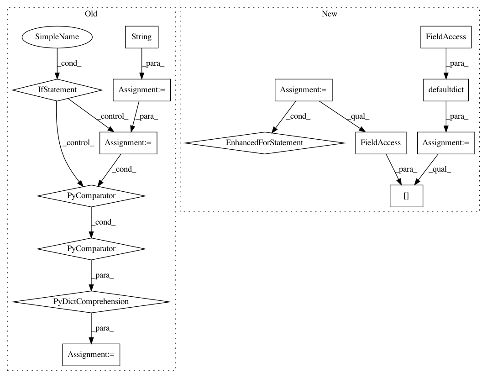

fdb77374313a8f53d5f5ab192ad88e96c4b65c23,src/python/pants/core/util_rules/stripped_source_files.py,,strip_source_roots,#Any#,23
Before Change
SourceRootsRequest.for_files(rooted_files_snapshot.files),
)
file_to_source_root = {
str(file): root for file, root in source_roots_result.path_to_root.items()
}
files_grouped_by_source_root = {
source_root.path: tuple(str(f) for f in files)
for source_root, files in itertools.groupby(
file_to_source_root.keys(), key=file_to_source_root.__getitem__
)
}
if len(files_grouped_by_source_root) == 1:
source_root = next(iter(files_grouped_by_source_root.keys()))
if source_root == ".":
After Change
SourceRootsRequest.for_files(rooted_files_snapshot.files),
)
source_roots_to_files = defaultdict(set)
for f, root in source_roots_result.path_to_root.items():
source_roots_to_files[root.path].add(str(f))
if len(source_roots_to_files) == 1:
source_root = next(iter(source_roots_to_files.keys()))
if source_root == ".":
resulting_snapshot = rooted_files_snapshot
In pattern: SUPERPATTERN
Frequency: 3
Non-data size: 15
Instances
Project Name: pantsbuild/pants
Commit Name: fdb77374313a8f53d5f5ab192ad88e96c4b65c23
Time: 2020-10-16
Author: 14852634+Eric-Arellano@users.noreply.github.com
File Name: src/python/pants/core/util_rules/stripped_source_files.py
Class Name:
Method Name: strip_source_roots
Project Name: Scitator/catalyst
Commit Name: df7332c3ba49e782f14414639e537f37a19133a8
Time: 2019-05-13
Author: vvelicodnii@snapchat.com
File Name: catalyst/utils/plotly.py
Class Name:
Method Name: get_tensorboard_scalars